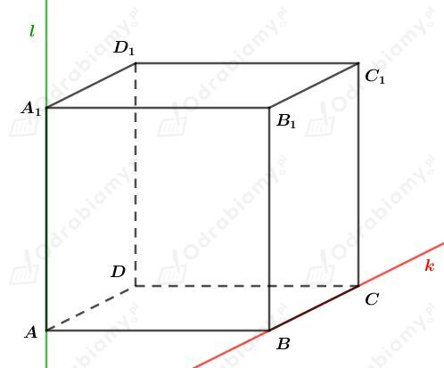

a)
Ściana sześcianu, która zawarta jest w płaszczyźnie równoległej do płaszczyzny zawierającej ścianę ADD1A1 to ściana BCC1B1.
b)
Ściana sześcianu, która zawarta jest w płaszczyźnie równoległej do płaszczyzny zawierającej ścianę DCC1D1 to ściana ABB1A1.
Rysunek:

Dane są płaszczyzny P1: A, D, D1, P2: A, B, D, P3: B, B1, C1, P4: B, B1, A1.
Ściana ADA1D1 zawiera się w płaszczyźnie P1, zatem ta płaszczyzna przecina się wzdłuż prostej l.
Ściana ABCD zawiera się w płaszczyźnie P2, zatem ta płaszczyzna przecina się wzdłuż prostej k.
Ściana BCC1B1 zawiera się w płaszczyźnie P3, zatem ta płaszczyzna przecina się wzdłuż prostej k.
Ściana ABB1A1 zawiera się w płaszczyźnie P4, zatem ta płaszczyzna przecina się wzdłuż prostej l.
Rysunek:
Ściany sześcianu zawarte są w sześciu różnych płaszczyznach. Płaszczyzna AB1C1D przecina te sześć płaszczyzn.
Zatem wierzchołki A, B1, C1, D należą do tej płaszczyzny.